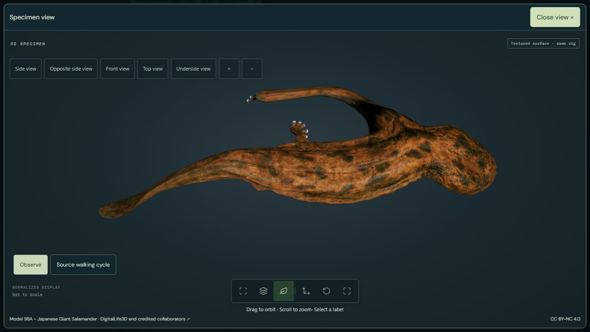
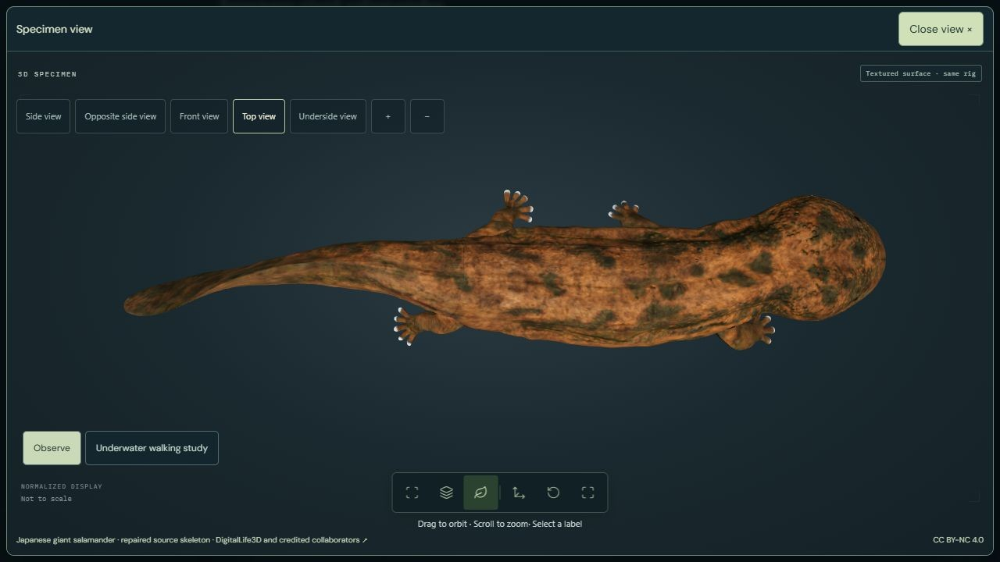

MODEL REPAIR · v0.7.21 · 13 November 2026
The previous GLB stretched the salamander’s limbs and displaced its surface relative to the skeleton. Re-importing the authors’ original FBX in Blender recovered the intact anatomy. PhenoVoxel now uses a new native GLB exported from that FBX.


Kawano and colleagues’ 2024 study combined museum photogrammetry with live Japanese giant salamander videos. Their walking reconstruction also used comparative salamander kinematics. It is a research model, not a direct recording of every joint in this individual.
Limits remain visible. The texture derives from preserved-specimen photographs and is not calibrated living skin reflectance. Eye darkness is an illustrative adjustment. Passing software checks does not establish accurate forces, contact mechanics, internal physiology, live coloration or population-level gait statistics. Independent biological validation remains pending.
Original Model 98A: DigitalLife3D; Johnson Martin and credited collaborators, with Sandy Kawano and the Smithsonian institutions. Model licence: CC BY-NC 4.0. The original download and historical PhenoVoxel asset remain preserved.
Pinned authors’ repository · Original model and credits · Smithsonian species account
To reproduce: download the pinned Model 98A ZIP, extract its FBX and textures, import the FBX with Blender, and run the conversion script after adapting its local paths. Then run the packaging script with the repository’s pinned dependencies. Both steps preserve the source UV layout. Browser derivatives use four normalized skin influences and quantized geometry; they are not lossless source files.